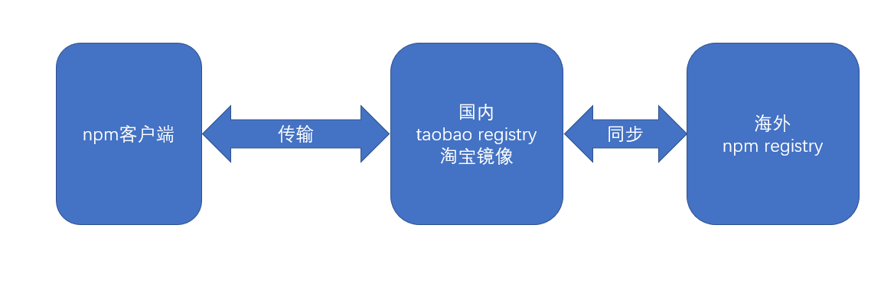

几乎可以这样认为，前端所有的包管理器都是基于 npm 的，目前，npm 即是一个包管理器，也是其他包管理的基石
node 和 npm 是互相成就的，node 的出现让 npm 火了，npm 的火爆带动了大量的第三方库的发展，很多优秀的第三方库打包上传到了 npm，这些第三方库又为 node 带来了大量的用户
一、npm介绍
npm(node package manager)，即node包管理器，它运行在 node 环境中，让开发者可以用简单的方式完成包的查找、安装、更新、卸载、上传等操作
npm 之所以要运行在 node 环境，而不是浏览器环境，根本原因是因为浏览器环境无法提供下载、删除、读取本地文件的功能。而 node 属于服务器环境，没有浏览器的种种限制，理论上可以完全掌控运行 node 的计算机。
当开发者安装好node之后，就自动安装了npm，不仅如此，node环境还专门为npm提供了良好的支持，使用npm下载的包更加方便了。
二、npm 由三部分组成
registry：入口，可以把它想象成一个庞大的数据库，第三方库的开发者将自己的库按照npm的规范打包上传到数据库中，使用者通过统一的地址下载第三方包
CLI(command-line interface)：命令行接口，安装好 npm 后，通过 CLI 来使用 npm 的各种功能
三、包的安装
3.1 淘宝镜像
由于 npm 的官方 registry 服务器位于国外，可能受网速影响导致下载缓慢或失败。因此，安装好 npm 之后，需要重新设置 registry 的地址为国内地址。目前，淘宝 https://registry.npm.taobao.org 提供了国内的 registry 地址，先设置到该地址。
设置方式为
npm config set registry https://registry.npm.taobao.org。设置好后，通过命令npm config get registry进行检查

3.2 本地安装
使用命令
npm install 包名或npm i 包名即可完成本地安装，本地安装的包出现在当前目录下的node_modules目录中随着开发的进展，
node_modules目录会变得异常庞大，目录下的内容不适合直接传输到生产环境，因此通常使用.gitignore文件忽略该目录中的内容如果本地安装的包带有 CLI，npm 会将它的 CLI 脚本文件放置到
node_modules/.bin下，使用命令npx 命令名即可调用
3.3 全局安装
使用命令
npm install --global 包名或npm i -g 包名，全局安装的包放置在一个特殊的全局目录，该目录可以通过命令npm config get prefix查看全局安装的包并非所有工程可用，它仅提供全局的 CLI 工具
大部分情况下，都不需要全局安装包，除非：
包的版本非常稳定，很少有大的更新
提供的 CLI 工具在各个工程中使用的非常频繁
CLI 工具仅为开发环境提供支持，而非部署环境
四、包配置
4.1 目前遇到的问题
拷贝工程后如何还原？
如何区分开发依赖和生产依赖？
如果自身的项目也是一个包，如何描述包的信息
以上这些问题都需要通过包的配置文件解决
4.2 配置文件
npm 将每个使用 npm 的工程本身都看作是一个包，包的信息需要通过一个名称固定的配置文件来描述，配置文件的名称固定为：package.json，可以手动创建该文件，而更多的时候，是通过命令
npm init创建的配置文件中可以描述大量的信息，包括：
name：包的名称，该名称必须是英文单词字符，支持连接符
version：版本
版本规范：主版本号.次版本号.补丁版本号(修复bug，做了些优化)
主版本号：仅当程序发生了重大变化时才会增长，如新增了重要功能、新增了大量的API、技术架构发生了重大变化
次版本号：仅当程序发生了一些小变化时才会增长，如新增了一些小功能、新增了一些辅助型的API
补丁版本号：仅当解决了一些 bug 或 进行了一些局部优化时更新，如修复了某个函数的 bug、提升了某个函数的运行效率
description：包的描述
homepage：官网地址
author：包的作者，必须是有效的 npm 账户名，书写规范是
account <mail>，例如：zhangsan <zhangsan@gmail.com>，不正确的账号和邮箱可能导致发布包时失败repository：包的仓储地址，通常指 git 或 svn 的地址，它是一个对象
type：仓储类型，git 或 svn
url：地址
main：包的入口文件，使用包的人默认从该入口文件导入包的内容
keywords: 搜索关键字，发布包后，可以通过该数组中的关键字搜索到包
- 使用
npm init --yes或npm init -y可以在生成配置文件时自动填充默认配置
五、保存依赖关系
大部分时候，我们仅仅是开发项目，并不会把它打包发布出去，尽管如此，我们仍然需要package.json文件
package.json文件最重要的作用，是记录当前工程的依赖
dependencies：生产环境的依赖包
devDependencies：仅开发环境的依赖包
- 配置好依赖后，使用下面的命令即可安装依赖
# 本地安装所有依赖 dependencies + devDependencies |
这样一来，代码移植就不是问题了，只需要移植源代码和package.json文件，不用移植node_modules目录，然后在移植之后通过命令即可重新恢复安装
为了更加方便的添加依赖，npm支持在使用install命令时，加入一些额外的参数，用于将安装的依赖包保存到package.json文件中，涉及的命令如下
# 安装依赖到生产环境 |
自动保存的依赖版本，例如
^15.1.3，这种书写方式叫做语义版本号（semver version），具体规则后续讲解
六、包的使用
- nodejs 对 npm 支持非常良好，当使用 nodejs 导入模块时，如果模块路径不是以 ./ 或 ../ 开头，则 node 会认为导入的模块来自于 node_modules 目录，例如：
var _ = require("lodash"); |
- 它首先会从当前目录的以下位置寻找文件
node_modules/lodash.js |
若当前目录没有这样的文件，则会回溯到上级目录按照同样的方式查找，如果到顶级目录都无法找到文件，则抛出错误
上面提到的入口文件按照以下规则确定
查看导入包的package.json文件，读取main字段作为入口文件
若不包含main字段，则使用index.js作为入口文件
入口文件的规则同样适用于自己工程中的模块
在 node 中，还可以手动指定路径来导入相应的文件，这种情况比较少见
七、语义版本
思考：如果你编写了一个包A，依赖另外一个包B，你在编写代码时，包B的版本是2.4.1，你是希望使用你包的人一定要安装包B，并且是2.4.1版本，还是希望他可以安装更高的版本，如果你希望它安装更高的版本，高的什么程度呢？
回顾：版本号规则
版本规范：主版本号.次版本号.补丁版本号
主版本号：仅当程序发生了重大变化时才会增长，如新增了重要功能、新增了大量的API、技术架构发生了重大变化
次版本号：仅当程序发生了一些小变化时才会增长，如新增了一些小功能、新增了一些辅助型的API
补丁版本号：仅当解决了一些 bug 或 进行了一些局部优化时更新，如修复了某个函数的 bug、提升了某个函数的运行效率
有的时候，我们希望：安装我的依赖包的时候，次版本号和补丁版本号是可以有提升的，但是主版本号不能变化
有的时候，我们又希望：安装我的依赖包的时候，只有补丁版本号可以提升，其他都不能提升
甚至我们希望依赖包保持固定的版本，尽管这比较少见
这样一来，就需要在配置文件中描述清楚具体的依赖规则，而不是直接写上版本号那么简单，这种规则的描述，即语义版本
语义版本的书写规则非常丰富，下面列出了一些常见的书写方式
| 符号 | 描述 | 示例 | 示例描述 |
|---|---|---|---|
| > | 大于某个版本 | >1.2.1 | 大于1.2.1版本 |
| >= | 大于等于某个版本 | >=1.2.1 | 大于等于1.2.1版本 |
| < | 小于某个版本 | <1.2.1 | 小于1.2.1版本 |
| <= | 小于等于某个版本 | <=1.2.1 | 小于等于1.2.1版本 |
| - | 介于两个版本之间 | 1.2.1 - 1.4.5 | 介于1.2.1和1.4.5之间 |
| x | 不固定的版本号 | 1.3.x | 只要保证主版本号是1，次版本号是3即可 |
| ~ | 补丁版本号可增 | ~1.3.4 | 保证主版本号是1，次版本号是3，补丁版本号大于等于4 |
| ^ | 此版本和补丁版本可增 | ^1.3.4 | 保证主版本号是1，次版本号可以大于等于3，补丁版本号可以大于等于4 |
| * | 最新版本 | * | 始终安装最新版本 |
八、避免还原的差异
- 版本依赖控制始终是一个两难的问题
如果允许版本增加，可以让依赖包的bug得以修复（补丁版本号），可以带来一些意外的惊喜（次版本号），但同样可能带来不确定的风险（新的bug）
如果不允许版本增加，可以获得最好的稳定性，但失去了依赖包自我优化的能力
而有的时候情况更加复杂，如果依赖包升级后，依赖也发生了变化，会有更多不确定的情况出现
基于此，npm 在安装包的时候，会自动生成一个 package-lock.json 文件，该文件记录了安装包时的确切依赖关系
当移植工程时，如果移植了 package-lock.json 文件，恢复安装时，会按照 package-lock.json 文件中的确切依赖进行安装，最大限度的避免了差异
九、[扩展]npm的差异版本处理
- 如果两个包依赖同一个包的不同版本，如下图

- 面对这种情况，在 node_modules 目录中，不会使用扁平的目录结构，而会形成嵌套的目录，如下图：
├── node_modules |
十、运行环境配置
我们书写的代码一般有三种运行环境：开发环境、生产环境、测试环境
有的时候，我们可能需要在 node 代码中根据不同的环境做出不同的处理，如何优雅的让 node 知道处于什么环境，是极其重要的
10.1 通常我们使用如下的处理方式
node中有一个全局变量 global (可以类比浏览器环境的window)，该变量是一个对象，对象中的所有属性均可以直接使用
global有一个属性是process，该属性是一个对象，包含了当前运行node程序的计算机的很多信息，其中有一个信息是env，是一个对象，包含了计算机中所有的系统变量
通常，我们通过系统变量 NODE_ENV 的值，来判定node程序处于何种环境
有两种方式设置 NODE_ENV 的值，我们一般使用临时设置
永久设置
临时设置
- 因此，我们可以配置 scripts 脚本，在设置好了 NODE_ENV 后启动程序
为了避免不同系统的设置方式的差异，可以使用第三方库 cross-env 对环境变量进行设置
10.2 在node中读取package.json
有的时候，我们可能在 package.json 中配置一些自定义的字段，这些字段需要在node中读取
在node 中，可以直接导入一个json格式的文件，它会自动将其转换为js对象
十一、其他npm命令
11.1 安装
- 精确安装最新版本
npm install --save-exact 包名 |
- 安装指定版本
npm install 包名@版本号 |
11.2 查询
- 查询包安装路径
npm root [-g] |
- 查看包信息(npm 所有包都可以 没下载的也行)
npm view 包名 [子信息] |
- 查询安装包
npm list [-g] [--depth=依赖深度] |
11.3 更新
- 检查有哪些包需要更新
npm outdated |
- 更新包
npm update [-g] [包名] |
11.4 卸载包
npm uninstall [-g] 包名 |
11.5 npm 配置
npm的配置会对其他命令产生或多或少的影响
安装好npm之后，最终会产生两个配置文件，一个是用户配置，一个是系统配置，当两个文件的配置项有冲突的时候，用户配置会覆盖系统配置
通常，我们不关心具体的配置文件，而只关心最终生效的配置
- 通过下面的命令可以查询目前生效的各种配置
npm config ls [-l] [--json] |
- 另外，可以通过下面的命令操作配置
- 获取某个配置项
npm config get 配置项 |
- 设置某个配置项
npm config set 配置项=值 |
- 移除某个配置项
npm config delete 配置项 |
# 发布包11.6 准备工作
- 移除淘宝镜像源
- npm config delete registry
到npm官网注册一个账号，并完成邮箱认证
本地使用 npm cli 进行登录
使用命令
npm login登录使用命令
npm whoami查看当前登录的账号使用命令
npm logout注销
创建工程根目录
使用npm init进行初始化
11.7 发布
开发
确定版本
使用命令
npm publish完成发布
11.8 开源协议

- 可以通过网站 http://choosealicense.online/appendix/ 选择协议，并复制协议内容